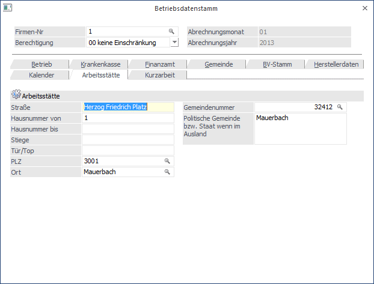

In diesem Register werden die Stammdaten für die Betriebsstätte erfasst, die in weiterer Folge für die Arbeitsstättenmeldung am L16 benötigt wird.

Folgende Felder können bearbeitet werden, wobei auf eine genaue Schreibweise zu achten ist. Bei der Neuanlage einer Arbeitsstätte werden die Daten aus den Betriebsdaten übernommen.
Ø Straße
Ø Hausnummer von
Ø Hausnummer bis
Ø Stiege
Ø Tür/Top
Ø PLZ
Durch Drücken der F9-Taste wird nach der eingegebenen Postleitzahl gesucht. Ist die Postleitzahl vorhanden, wird auch gleich das Feld Ort mit ausgefüllt.
Ø Ort
Ø Gemeindenummer
In diesem Feld wird die Gemeindenummer eingetragen, die mit der Gemeindenummer für die elektronische Übermittlung der Kommunalsteuererklärung ident ist. Durch Drücken der F9-Taste kann nach allen österreichischen Gemeinden gesucht werden. Wurde eine Gemeindenummer ausgewählt, wird der Name der Gemeinde unter dem Eingabefeld angezeigt. Befindet sich die Betriebsstätte im Ausland, muss das Feld nicht bearbeitet werden. In dem Fall bleibt die Gemeindenummer 0.
Ø Politische Gemeinde bzw. Staat wenn im Ausland
Wurde die Gemeindekennziffer eingegeben und mit RETURN bestätigt, wird hier automatisch die Gemeinde eingetragen. Befindet sich die Arbeitsstätte im Ausland, muss hier der Staat eingegeben werden ,in dem sich die Arbeitsstätte befindet (z.B. Deutschland).